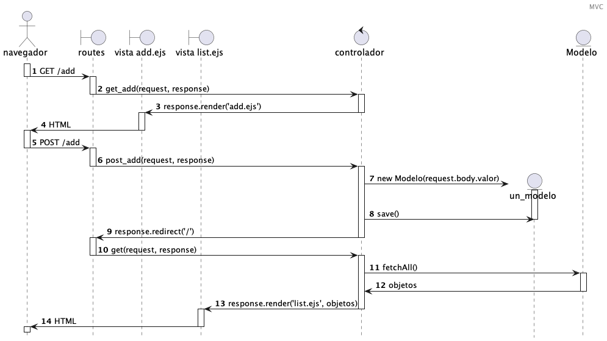

Lab 13: MVC
Descripción
En esta actividad exploraremos el estilo arquitectónico Modelo-Vista-Controlador y lo implementaremos con node+express.
Modalidad
Individual.
Objetivos de aprendizaje
- Entender el estilo arquitectónico Modelo-Vista-Controlador.
- Diseñar aplicaciones con un estilo arquitectónico Modelo-Vista-Controlador.
- Implementar aplicaciones con un estilo arquitectónico Modelo-Vista-Controlador.
Instrucciones
- Atiende a la explicación del profesor del tema MVC y pregunta tus dudas.
- Recuerda que para generar una aplicación es necesario inicializar el proyecto con
npm init, e instalarexpress,body-parsery un template engine como EJS connpm install --save [nombre_paquete]. Si es necesario, recuerda configurar el archivopackage.jsonpara incluir el script que quieres que se ejecute connpm start. -
A continuación, haremos una implementación a partir del diseño que se presenta en el siguiente diagrama de secuencia:
Por convención, nuestros controladores los pondremos en una carpeta
controllers. Comenzaremos a mover la lógica que antes habíamos puesto en las vistas, hacia una variable que exportaremos del controlador. Utilizaremos de ejemplo el controladora_controller.js:exports.action = (request, response, next) => { response.render('view_file', { atribute_1: 'Data 1', atribute_2: 'Data 2' }); }; - El archivo con la ruta quedará más ligero, ya que únicamente tendrán nuestra ruta y la referencia hacia el controlador que utilizarán, quedando de la siguiente forma:
const aController = require('../controllers/a_controller'); router.get('/add', aController.action); - Para implementar la capa del modelo, por convención, utilizaremos una carpeta
models. Ahí pondremos cada uno de los archivos de nuestro modelo. Es común tener un archivo de modelo por tabla de la base de datos. Un archivo de modelo, típicamente tiene la siguiente estructura:module.exports = class Modelo { //Constructor de la clase. Sirve para crear un nuevo objeto, y en él se definen las propiedades del modelo constructor(my_value) { this.attribute_1 = my_value; } //Este método servirá para guardar de manera persistente el nuevo objeto. save() { } //Este método servirá para devolver los objetos del almacenamiento persistente. static fetchAll() { } }Para usar el modelo en el controlador:
const Modelo = require('../models/modelo'); //Para crear un objeto de nuestro modelo const objeto = new Modelo('Valor de la instancia'); objeto.save(); //Para recuperar la lista de objetos del modelo const objetos = Modelo.fetchAll();Por el momento, podemos utilizar un arreglo para almacenar la información, entonces en al archivo del modelo podemos crear un arreglo
const objetos = [], llenar en métodosave()conobjetos.push(this);yfetchAll()conreturn objetos; - Refactoriza alguno de tus laboratorios anteriores o el avance de tu proyecto utilizando un estilo arquitectónico MVC. Otra opción es que crees una nueva aplicación utilizando este patrón.
- Agrega una nueva funcionalidad que toque todos los puntos clave de la arquitectura.
Preguntas a responder
- ¿Qué beneficios encuentras en el estilo MVC?
- ¿Encuentras alguna desventaja en el estilo arquitectónico MVC?
Especificaciones de entrega
A través de tu repositorio personal.